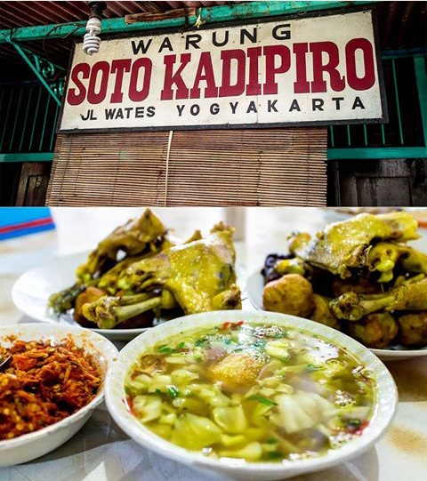

Soto Kadiptiro Yogyakarta

Apa menariknya warung Gudeg Pawon Yogyakarta ini?
- RSoto nostalgia. Banyak pengunjung yang datang lantaran dulu, saat masih kecil diajak ke sana oleh bapak,
ibu bahkan simbah-simbahnya. Jadi mengunjungi warung soto ini sekaligus mengenang sejarah perjalanan hidup para pembaca sekalian.
- Buka pas libur Lebaran. Menurut informasi yang di dapat tim gudeg.net, warung soto ayam Kadipiro hanya
libur selama tiga hari saat Lebaran, selebihnya tetap buka seperti biasa.
- Termasuk warung yang buka sebelum proklamasi kemerdekaan. Warung soto Kadipiro awalnya buka tahun 1921.
Pelopornya adalah bapak Karto Wijoyo. Setelah beliau meninggal pada tahun 1972, usaha keluarga ini dilanjutkan putranya, bapak Widadi Dirjo Utomo.
- Perkedelnya juara. Selain ada lauk dada atau brutu ayam serta tempe bacem yang enak, perkedel di warung soto
Kadipiro jalan Wates rasanya juara. Gurih dan juga tidak berminyak.
- Meski ramai tapi waktu tunggunya relatif pendek. Warung soto Kadipiro jalan Wates yang menjadi pelopor usaha
sejenis di tempat berbeda selalu ramai. Dari sejak buka hingga tutup di sore hari. Biarpun situasinya ramai,
namun pengunjung tak pernah dibiarkan menunggu terlalu lama.
Menu makanan
Satu mangkok soto ayam + dada ayam + perkedel + tahu bacem + jeruk hangat = Rp. 39.000,00